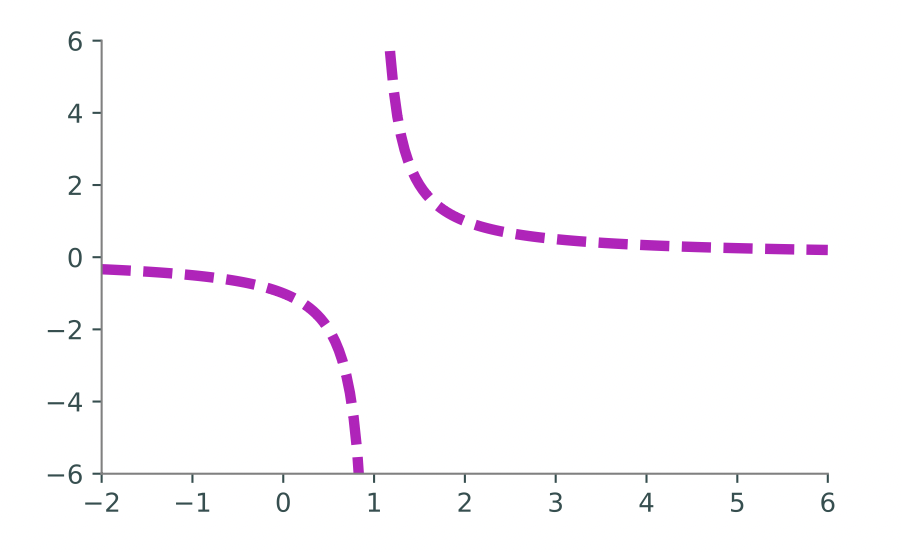

Lab 1: Introduction to Plotting¶
This material is adapted from the ACME lab on MatPlotLib.
Raw numerical data is rarely helpful unless it can be visualized.
Fortunately there is a helpful Python package matplotlib that can help you create nice visualizations of your data. You have already seen this package in your SVD lab, but in this lab you will learn
more about its capabilities.
We will focus on creating line plots. The following code creates an array of outputs of
the function \(f(x) = x^2\), then visualizes the array using matplotlib.
import numpy as np
from matplotlib import pyplot as plt
y = np.arange(-5,6)**2
# Visualize the plot.
plt.plot(y) # Draw the line plot.
plt.show() # Reveal the resulting plot.
The result is shown below in (a). Just as np is a standard alias for numpy, plt is a standard alias for matplotlib.pyplot in the Python community.

The call plt.plot(y) creates a figure and draws straight lines connecting the entries of y relative to the y-axis. The x-axis is (by default) the index of the array, which in this case is the integers from 0 to 10. Calling plt.show() then displays the figure.
An obvious problem with plot (a) is that the x-axis does not correspond correctly to the y-axis for the function \(f(x) = x^2\) that is being drawn. To correct this, define an array x for the domain, then use it to calculate the image \(y = f(x)\). The command plt.plot(x,y) plots x against y by drawing a line between the consecutive points (x[i], y[i]). Note that the arrays must have the same number of elements to be compatible.
Another problem with plot (a) is its poor resolution: the curve is visibly bumpy, especially near the bottom of the curve. numpy’s linspace() function makes it easy to get a higher-resolution domain by creating an array of evenly-spaced values in a given interval where the number of elements is specified.
# Get 4 evenly-spaced values between 0 and 32 (including endpoints).
np.linspace(0, 32, 4)
# Get 50 evenly-spaced values from -5 to 5 (including endpoints).
x = np.linspace(-5, 5, 50)
y = x**2 # Calculate the range of f(x) = x**2.
plt.plot(x, y)
plt.show()
The resulting plot is shown in (b). This time, the x-axis correctly matches up with the y-axis. The resolution is also much better because x and y have 50 entries each instead of only 10.
Task 1¶
Write a function that plots the functions sin(x), cos(x), and arctan(x) on the domain [-2π, 2π] (use np.pi for π). Call plt.xlim(-2*np.pi, 2*np.pi) before plt.show() to stretch the x-axis appropriately. Make sure the domain is refined enough to produce a figure with good resolution.
Note: For this lab, the autograder is testing to see if your graphs are a pixel-perfect match for the solution graphs, so follow the instructions closely. Future labs will mostly rely on alternative grading methods.
Plot Customization¶
The plots you created in Task 1 are extremely basic. Most plots are greatly improved by the addition of color, legends, axis labels and titles.
plt.plot() receives several keyword arguments for customizing the drawing. For example, the color and style of the line are specified by the following string arguments.
Key |
Color |
Key |
Style |
|
|---|---|---|---|---|
|
blue |
|
solid line |
|
|
green |
|
dashed line |
|
|
red |
|
dash-dot line |
|
|
cyan |
|
dotted line |
|
|
black |
|
circle marker |
Specify one or both of these string codes as the third argument to plt.plot() to change from the default color and style. Other plt functions further customize a figure.
Function |
Description |
|---|---|
|
Place a legend in the plot |
|
Add a title to the plot |
|
Set the limits of the |
|
Add a label to the |
x1 = np.linspace(-2, 4, 100)
plt.plot(x1, np.exp(x1), 'g:', linewidth=6, label="Exponential")
plt.title("This is the title.", fontsize=18)
plt.legend(loc="upper left") # plt.legend() uses the 'label' argument of
plt.show() # plt.plot() to create a legend.
x2 = np.linspace(1, 4, 100)
plt.plot(x2, np.log(x2), 'r*', markersize=4)
plt.xlim(0, 5) # Set the visible limits of the x axis.
plt.xlabel("The x axis") # Give the x axis a label.
plt.show()
{kind=link}
See the MatPlotLib documentation for more comprehensive lists of colors, line styles, and figure customization routines.
Task 2¶
Write a function to plot the curve \(f(x) = \dfrac{1}{x-1}\) on the domain [-2, 6].
Although \(f(x)\) has a discontinuity at \(x = 1\), a single call to
plt.plot()in the usual way will make the curve look continuous. Split up the domain into \([-2, 1)\) and \((1,6]\). Plot the two sides of the curve separately so that the graph looks discontinuous at \(x = 1\).If we use the two functions
x1 = np.linspace(-2,1,N)andx2 = np.linspace(1,6,N)to generate our domains, then each domain will contain1, and therefore there will be division by0if we plug those endpoints into the function. You should remove the last number from the first list, and the first number from the second list, getting rid of the1s to prevent division by0.Plot both curves with a dashed magenta line. Set the keyword argument
linewidth(orlw) ofplt.plot()to4to make the line a little thicker than the default setting.Use
plt.xlim()andplt.ylim()to change the range of thex-axis to \([-2, 6]\) and the range of they-axis to \([-6, 6]\).
The plot should resemble the figure below.
{kind=link}